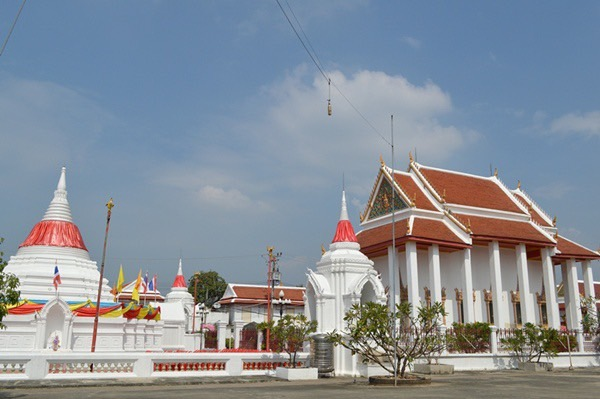
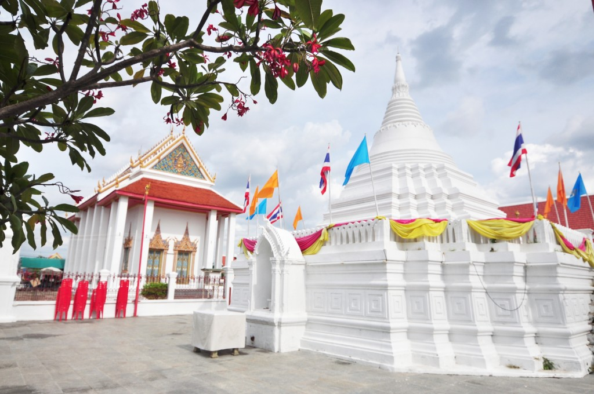

วัด
วัดปรมัยยิกาวาส
ลงเรือแล้วเดินไม่กี่ก้าวก็ถึง เป็นจุดแรกที่คนส่วนใหญ่เริ่มต้น และเป็นจุดที่บอกได้ดีที่สุดว่าเกาะนี้เป็นชุมชนมอญมาก่อน

สรุปให้ก่อน
- ค่าเข้า
- ไม่เสียค่าเข้าทำบุญตามศรัทธา
- เวลาเปิด
- ช่วงกลางวันบางส่วนปิดช่วงพักกลางวัน
- พิกัด
- ติดท่าเรือฝั่งเหนือเดินจากท่าเรือไม่ถึง 2 นาที
- ใช้เวลา
- ราว 30–45 นาทีเช้าคนน้อยที่สุด
ถ้ามีเวลาแค่จุดเดียวบนเกาะ ที่นี่คือจุดนั้น วัดปรมัยยิกาวาสอยู่ติดท่าเรือฝั่งที่คนข้ามมามากที่สุด ลงเรือแล้วเงยหน้าก็เห็นเลย ไม่ต้องหา
ทำไมต้องเข้า
วัดนี้เป็นวัดหลวงที่ได้รับการบูรณะในสมัยรัชกาลที่ 5 แต่ตัวชุมชนรอบวัดเป็นมอญมาก่อนหน้านั้นนาน งานช่างในวัดจึงเป็นการผสมกันของสองอย่าง ไทยกับมอญ อยู่ในที่เดียวกัน
- พระอุโบสถที่ตกแต่งด้วยลายปูนปั้นและกระเบื้องนำเข้า
- พระพุทธรูปประธานที่หล่อในสมัยรัชกาลที่ 5
- พิพิธภัณฑ์เล็ก ๆ ที่เก็บของใช้และเครื่องปั้นดินเผามอญ
- มุมริมน้ำหลังวัดที่มองเห็นเรือผ่านไปมา

เข้าวัดยังไงให้ไม่พลาดมารยาท
- แต่งตัวสุภาพ กางเกงขาสั้นเหนือเข่ากับสายเดี่ยวอาจโดนขอให้ยืมผ้าคลุม
- ถอดรองเท้าก่อนขึ้นอาคาร มีที่วางให้
- ในเขตพระอุโบสถถ่ายรูปได้ แต่หลีกเลี่ยงการยืนบังคนที่กำลังไหว้พระ
ไปช่วงเช้าจะได้แสงดีที่สุด
แดดเช้าเข้าทางด้านข้างของพระอุโบสถพอดี ตอนบ่ายแดดจะแข็งและมีเงาตกลงมาทับ ถ่ายยากกว่ามาก
ไปต่อจากตรงนี้
ออกจากวัดแล้วเลี้ยวไปทางริมน้ำ เดินอีกไม่กี่นาทีก็ถึงเจดีย์เอียงมุเตา สองจุดนี้อยู่ใกล้กันมาก คนส่วนใหญ่จึงเดินต่อกันเลย
ข้อมูลชุดนี้ยังเป็นตัวอย่าง ราคาและเวลาต้องไปเช็กของจริงที่เกาะเกร็ดก่อนเผยแพร่